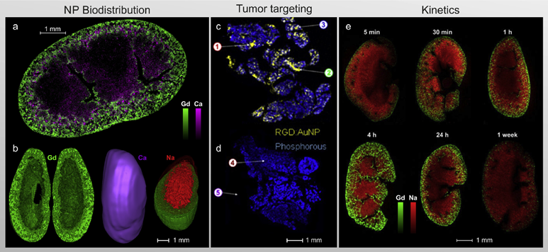

Biomedical
The widespread and growing applications of LIBS in biomedical fields are substantial. Specto Shimatsu systems—scanners, benchtop, and customized models—can be configured for biomedical use.
Early use in medicine focused on elemental analysis during histopathology of pigments or vacuoles. LIBS can detect exogenous contaminants and micro/nanoparticles. To avoid challenges of biopsy, LIBS imaging combined with PCA supports cancer diagnosis on skin and other organs by directly imaging tissues or blood/serum. This assists surgeons in optimal tumor resection by distinguishing healthy from malignant tissue based on elemental distributions (e.g., Ca, K, Na; trace metals such as Mg and Cu).
Systems can also detect heavy metals, and characterize cholesterol and calcification in arteries, plasma, and bones as indicators of anomalies at organ scale. LIBS has been applied to lymphoma, melanoma, glioma, nasopharyngeal carcinoma, and liver/breast/cervix/lung/bone cancers. Treatment efficacy evaluation and disease staging are also supported.

Ref: Busser, Benoit, et al. "Elemental imaging using laser-induced breakdown spectroscopy: A new and promising approach for biological and medical applications." Coordination Chemistry Reviews 358 (2018): 70–79.
LIBS can directly detect metal nanoparticles (e.g., Si, Gd, Au) without chemical modification or dye labeling. This enables in-vivo tracing of nanoparticle-based drugs to study degradation, stability, and residence time. Efficient drug delivery can be monitored via 2D LIBS imaging when targeting malignant cells. During pharmaceutical QA/QC, Specto Shimatsu analyzers can authenticate efficacy and purity. 3D LIBS imaging of tablets and coatings characterizes homogeneity of active pharmaceutical ingredients at μm resolution and supports trace metal/catalyst detection.